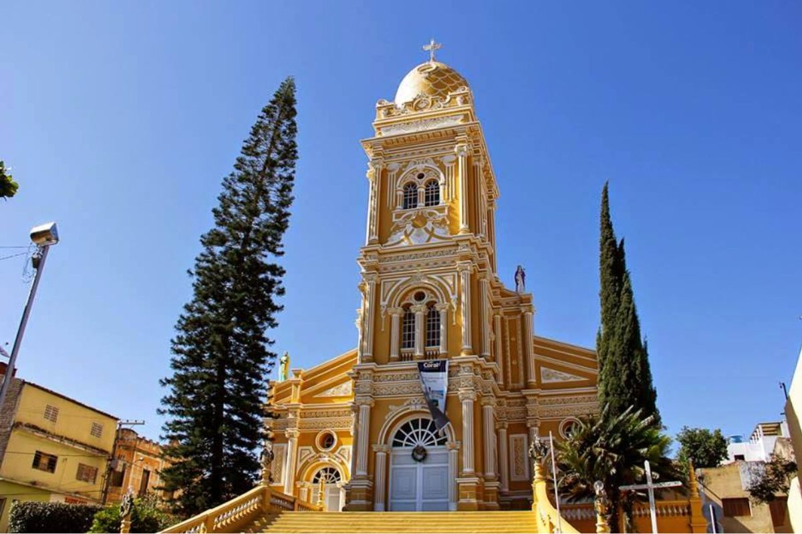

🇧🇷 Português
A Igreja Matriz de Nossa Senhora das Dores em Triunfo, Pernambuco, é um importante patrimônio cultural e religioso, com um belo estilo eclético, notável campanário e grande escadaria.
Sendo a padroeira da cidade, a igreja é um marco turístico no alto da Serra da Baixa Verde, local de fé e devoção para os triunfenses, tombada como patrimônio histórico.
🇺🇸 English
The Igreja Matriz de Nossa Senhora das Dores in Triunfo, Pernambuco, is an important cultural and religious heritage, with a beautiful eclectic style, notable bell tower, and large staircase.
As the patron saint of the city, the church is a tourist landmark at the top of the Serra da Baixa Verde, a place of faith and devotion for the people of Triunfo, listed as historical heritage.